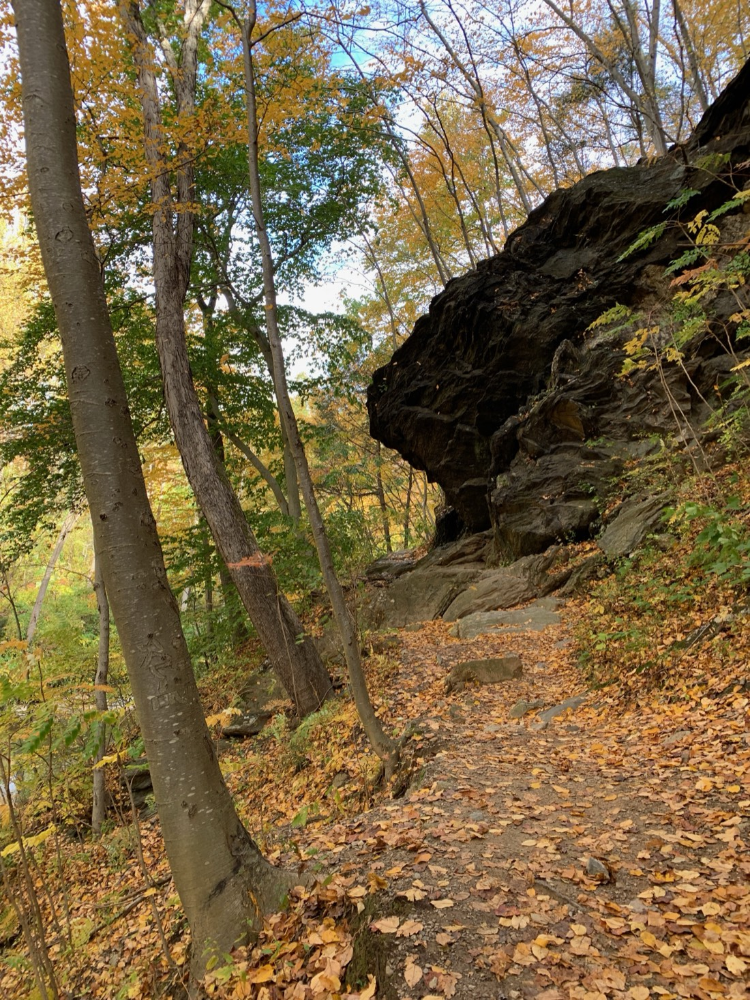
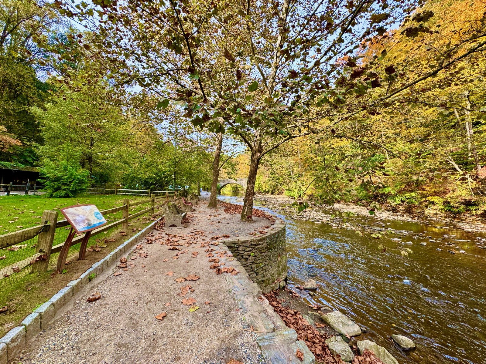
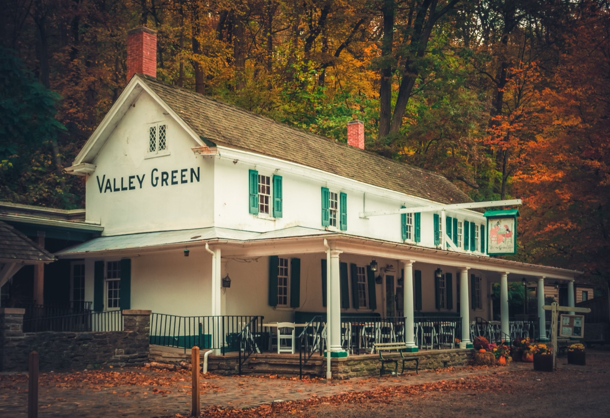
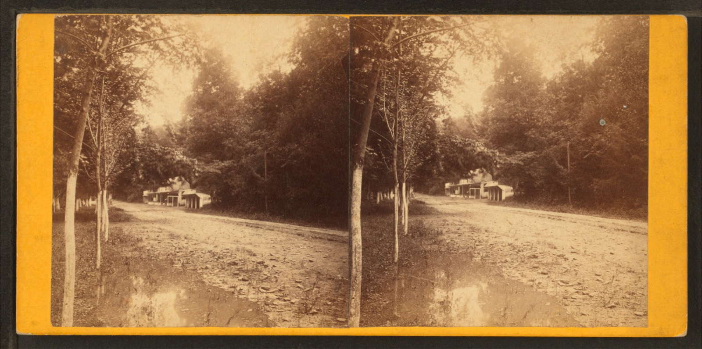

The valley
The Wissahickon is a wooded gorge in northwest Philadelphia: about two thousand acres of forest around a creek, a National Natural Landmark, with a car-free gravel road called Forbidden Drive running the length of it.
It is where we like to spend our time outdoors, and it is the standard we hold everything to. Gear should look right under these trees and work in this weather.



Valley Green Inn
Valley Green Inn has stood beside the creek since about 1850. It is the last of the old roadhouses that once lined Forbidden Drive, and it still serves meals today.
It is the landmark we think of first: white walls and green shutters at the foot of the woods.

Who we are
Wissahickon Outfitters is two friends in Philadelphia, just getting started. We are designing outdoor gear for the house and the trailhead, slowly and in the open.
We are not selling anything yet. First we want to listen, and to meet the people who use this valley the way we do.
Connect
We are just getting started, and we are looking to develop this with the people who would use it. Tell us what you would like to see. Every suggestion helps, and we read all of them.
We are also trying to grow a community of people who love the Wissahickon. Say hello and we will keep you posted.
hello@wissahickonoutfitters.com
The buttons open an email. We use your address only to write back and to keep you posted, and we do not share it.